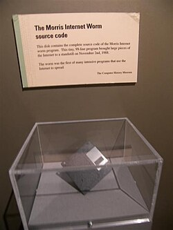

Nombre completo: Robert Tappan Morris
Fecha de nacimiento: 8 de noviembre de 1965
Lugar de nacimiento: Estados Unidos
Situación actual: Sigue vivo y trabaja como profesor en MIT
Datos personales
Robert Tappan Morris es un informático, profesor y emprendedor. Es conocido sobre todo por haber creado el Morris Worm, uno de los primeros gusanos informáticos que tuvo un gran impacto en Internet.
Estudió en Harvard University y también pasó por Cornell University durante su formación. Más tarde desarrolló su carrera académica y profesional en el ámbito de los sistemas y las redes.
Logros
- Informático estadounidense.
- Conocido por el Morris Worm.
- Profesor en MIT.
- Cofundador de Viaweb y Y Combinator.
Proyecto: Morris Worm
El proyecto más famoso relacionado con Robert Tappan Morris fue el Morris Worm. Se lanzó en 1988 y afectó a muchos ordenadores conectados a Internet.
El gusano aprovechaba fallos de seguridad y se copiaba demasiadas veces, lo que hacía que muchos equipos fueran más lentos o dejaran de funcionar correctamente.
Descripción
- Fue creado cuando Morris era estudiante.
- Se difundió por sistemas Unix conectados a la red.
- Demostró que Internet podía sufrir ataques a gran escala.
- Ayudó a que la seguridad informática se tomara más en serio.
Ya no es reconocido como una amenaza real, pero sigue siendo muy importante en la historia de la ciberseguridad.
Tabla de información
| Aspecto | Información |
|---|---|
| Nombre | Robert Tappan Morris |
| Nacimiento | 8 de noviembre de 1965 |
| Profesión | Profesor, informático y emprendedor |
| Proyecto destacado | Morris Worm |
| Imagen de Robert Tappan Morris | |
| Imagen del proyecto |  |
Curiosidades
Fue una de las primeras personas condenadas en Estados Unidos por un caso relacionado con la ley de fraude y abuso informático.
Después de ese episodio, siguió teniendo una carrera importante en el mundo de la informática y llegó a ser profesor del MIT.